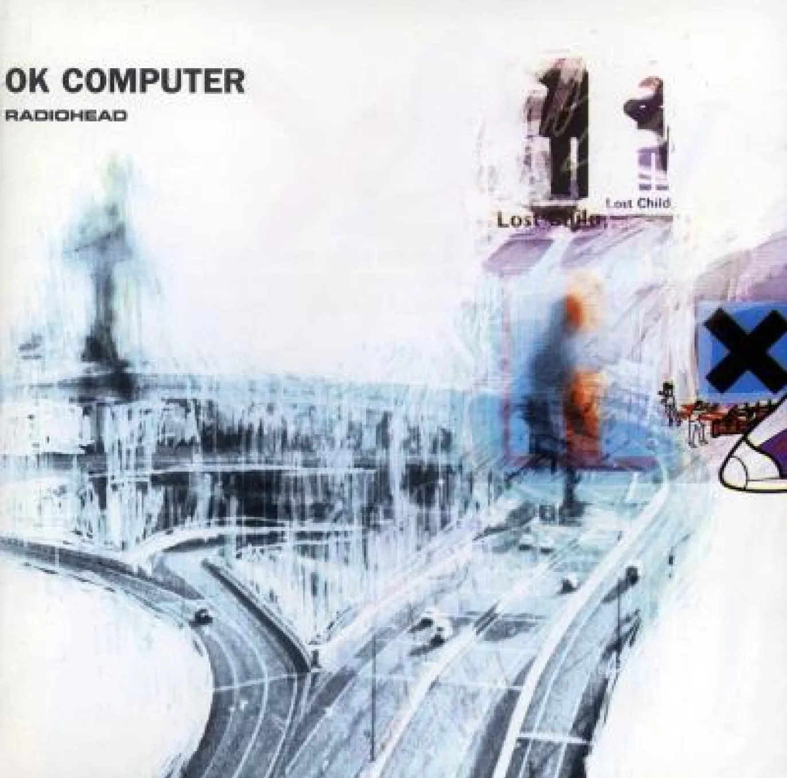

A moving track about the abuses of technology.
The song “No Surprises”, taken from Radiohead's album OK Computer (1997), deals with themes that are very
similar to the subject explored by my site : dependence on technology, modern saturation and the quest for a
simpler life.
Radiohead's work, through this song in particular, offers a critique of the modern world and its
technological excesses, making it an ideal parallel to the theme of the loss of technology.
A critique of modern society
In OK Computer, Radiohead criticises the existential malaise of
technological society.
"No Surprises" expresses the desire to escape a life controlled by routine, over-consumption and the
dehumanisation caused by the rise of machines.

“No Surprises” music cover picture
The song's lyrics reflect a deep sense of exhaustion in the face of a world where technology
dominates every aspect of life, a world in which machines are too important, a world in which we
no longer know how to enjoy the beauty of the world around us.
The search for a return to simplicity
One of the central ideas of “No Surprises” is the desire for a calm life, free from the constant pressure of modernity.
This search for a return to simplicity, away from the many technologies, echoes the subject of my site.

“OK Computer” album cover
Radiohead expresses a need to disconnect, just as users of the site may be curious to
discover low-tech alternatives to technological life..
Reflection on the Absence of Technology
In the context of my site, “No Surprises” could be used as a soundtrack to reflect on a future without technology.
The melancholy sweetness of the song, combined with its disillusioned lyrics,
reinforces the idea of a world where technology no longer brings comfort, but rather a feeling of anxiety.
This feeling of exhaustion in the face of modernity and the search for simple solutions
is precisely what the site aims to explore.